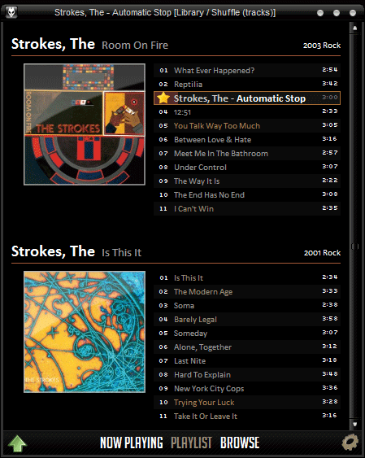

Playa is a digital audio files player for desktop, developed using web technologies inside the Electron framework.
It is my reconciliation with development after a long break, since I decided to devote my life to music. Why have I chosen such an anachronistic project, in this streamable era of eternal present?
Because I am an avid collector of digital music (as much as I am of physical one), and I spent a considerable amount of temporal and mental resources in order to organise it; I like to enjoy things I care for.
On this website I want to share my train of thought and the solutions I found to the problems I am encountering, rather than merely promoting a piece of software that I do not intend to earn my living on - unless somebody is willing to sponsor me of course.
# Life before Playa
My favourite Windows player (after Winamp of course) was foobar2000.

Unlike most of the then competitors, one of the available mods showed the files grouped in albums, next to the artwork. This visual detail meant a lot to me, because I was transitioning from party playlists and single songs to appreciating full LPs and discographies of bands.
As I transitioned to Mac hardware, I realised there was no OS X port of foobar. How sad! I tried to emulate it through Wine, but the overhead and the frequent crashed made me desist and fallback to other solutions such as Cog. All the available options were either too bloated or too minimal.
Around 2009 I gave Spotify a chance. It looked like black magic to me back then, such a big catalog without having to rely on my external disk all the time. But there wasn't everything, and I didn't want to switch between many apps for such a vital need for me.
My final pick was Vox, the best no-frills player. But guess what? No simple group-by-albums. Yes it has the Collections feature, but you need to import all the files manually, plus it is closed source and so not tweakable.
Tired of dragging folders from my external drive, I decided to do the dirty work. From scratch.
# Electron
I had the idea countless times before. Java, Java FX (...), Flash, Objective C. I was either missing the focus, the will, the knowledge. It was about 2015 when I've read of a runtime that allowed a Chromium instance and a node.js backend to be wrapped and shipped together. I could use the web technologies I already mastered to build a desktop app, finally with a decent UI (Swing, I am looking at you).
I started fiddling with Electron in no time, first implementing a CMS for static generated websites. I did using an electron based editor, how meta is that. I liked it. I felt it was the moment to start.
Like many others I guess, I like to give silly names to my projects. The aforementioned CMS was called Vaneella, because it handle a set of plain (vanilla) text files. I wanted my player to be real badass, a true P L A Y A H. I took a step back, I noticed the joyful iberic wordplay and I sticked to that.
It was a chance to learn this React thing everybody was talking about. The JSX syntax definitely sold it to me, as it allowed to write the UI in a familiar, declarative way - HTML basically.

The waveform background in the playback bar! The artwork from Discogs! The last.fm scrobbles! The playlist tabs! Ah, THE TRACKS AUTOMAGICALLY GROUPED BY FREAKING ALBUM.
# Vamos a la Playa (oh, oh-oh oh-oh)
I felt like the first iteration had lost momentum. The tech stack looked a bit old, like all stacks older than a couple of weeks nowadays I must say. Many design choices looked questionable. Almost no test coverage. And the biggest deal: I wanted to index my collection, but I had no vision how to include such feature in the application.
I tackled the problem from a different angle. What if I organised everything beforehand, so that the app would just reflect such order, instead of developing for a blurred usecase?
A little digression on how I organised my music folders of the years. At the very beginning there was God, and he or she or it created the world, the animals, the light, and Napster. And he or she or it told the first humans to use it sparsely because without broadband connection (that he or she or it forgot to create initially) it took biblical ages to download even a single song.
TL;DR I was young and happy and without full albums to sort, apart from those I directly ripped from my friends.
When I started to pile up more stuff, I sinned. I sorted it by genre. It looked cool. Subgenres too. Problem is that genres are not a partition of music, i.e. they overlap. And filesystem does not. And what about those bands with diverse discographies?
One morning I ditched all my precious, nonsensical subnormal subfolders for the aseptic and ascetic alphabetical order. I could not browse anymore by [Shoegaze - Dreampop - Indie - Noise] or by [Electro - Industrial - EBM - Future Pop], but I felt like I did the right thing.
What about the album folders? I slowly normalised them to year - title, e.g. 1991 - Just for a Day. Some bands had a plethora of singles or bootlegs, and I couldn't easily find the main releases. Time for a real discography partition now.
I took rateyourmusic as a model. Every artist page there shows their releases grouped as albums, EPs, compilations or singles. RYM is one of my best friends. It introduced me to soooo much good music. It really shaped my taste, so I trusted it blind.
After a very slow and at times painful process, my music collection now looks like:
Music
A
...
Alice in Chains
[Album]
1990 - Facelift
1992 - Dirt
...
[Bootleg / Unauthorized]
...
[Compilation]
...
[EP]
1992 - Sap
1994 - Jar of Flies
[Single]
1992 - Angry Chair
1992 - Down In A Hole
...Why am I sure? Because I checked with a script that every folder matches such structure, and I import all further media to respect the structure. I sacrificed all non music material such as booklets, covers, cue files, etc...as I never cared much over the years.
NOW I could import all my music, using the folder names as the single source of truth!
# Where do we go from here
Playa helped me to rediscover a lot of music I forgot I had already listened to, as well as to sharpen back my problem solving skills. There is room for improvement I hope to fill with further dedication and thanks to the feedback I will get through this page.